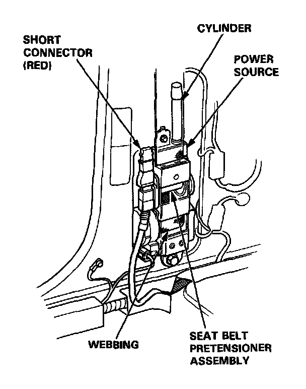

Technician Safety Information

Seat Belt Pretensioner Handling and Storage
Do not try to disassemble the seat belt pretensioner assembly. It has no serviceable parts. Once an seat belt pretensioner has been operated, it cannot be repaired or reused.
- Store the removed seat belt pretensioner assembly on a secure flat surface away from any high heat source (exceeding 100°C / 212°F1 and free of any oil, grease, detergent or water.
- Follow these precautions below during removal of a pretensioner.
- Install its short connector (RED) as soon as the pretensioner connector is disconnected.
- Use only the test equipment specified in the Electrical section.
- Do no disassemble the pretensioner or allow any impact to it.
For proper disposal see Air Bag and Seat Belt Pretensioner Disposal.